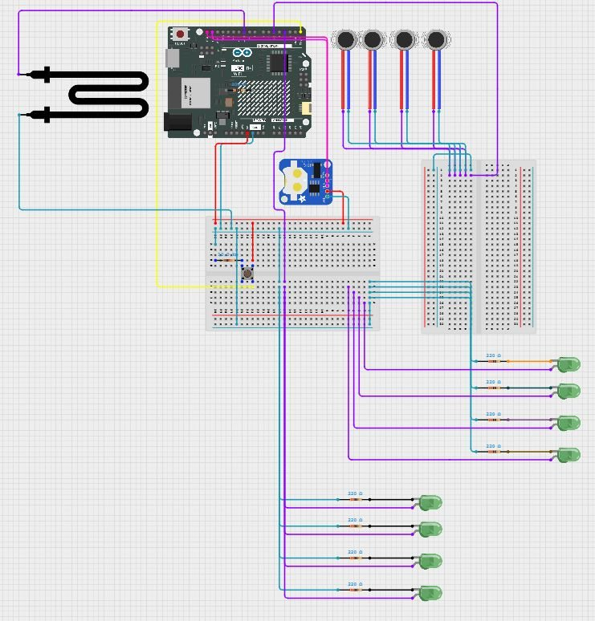
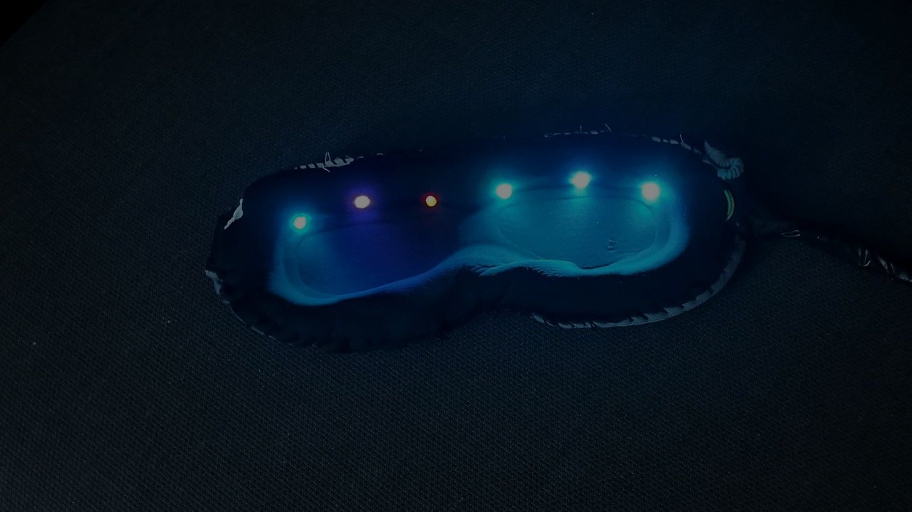
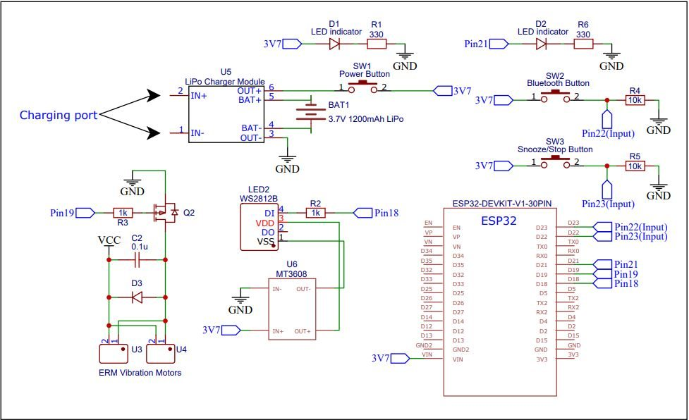
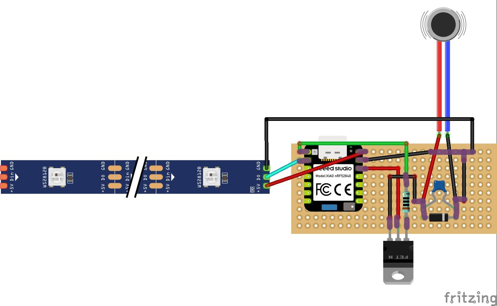
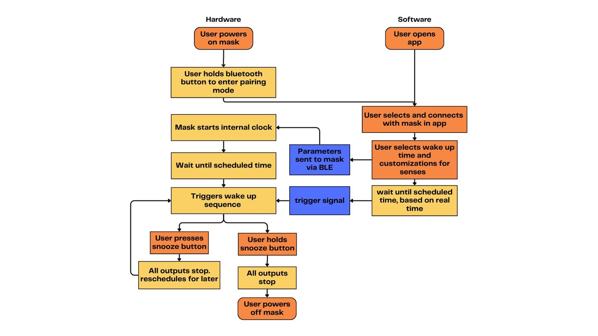

In a dorm or shared room, a loud alarm wakes everyone. MallowMask is a wearable that wakes only its wearer, without sound: a gradual sunrise of LEDs, gentle warmth, then soft vibration near the temples. It's built for shared living and for people who are hard of hearing.
v1.0: UPenn M&TSI
I led a 5-person team at the UPenn Management & Technology Summer Institute to build the first prototype: an Arduino-based mask controlled from a phone app through the Blynk IoT cloud. It won the Best Product Award out of 15 teams. My part was to:
- design the device circuitry and system architecture
- work out how vibration, light and heat should work together, and research the biology of sleep to set safety thresholds
- write all the embedded control logic in C++, a language I learned from scratch in two weeks
- integrate the embedded system with the IoT app my teammates built
- produce, film and edit the marketing video above

v1.1 and v1.2: from prototype to product
After the program I kept going. v1.1 shrank the control circuitry 8× compared with v1.0 and added an adjustable LED strip and four ERM vibration motors in a much lighter build. v1.2 fits all the control circuitry inside the mask, uses two ERM motors, and is controlled over Bluetooth Low Energy. It moved from ESP32 to nRF52840 on custom KiCad PCBs, with a companion app and website, and it's portable enough for MVP testing.




With a business partner I filed U.S. Provisional Patent Application No. 63/873965 for a modular wake-up system, wrote a product specification document, and talked with manufacturers.